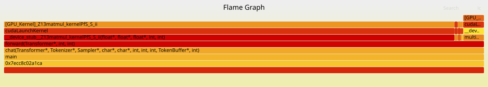

eBPF 示例：使用 CUPTI 构建 GPU 火焰图分析器
您是否曾想过，您的哪部分 CPU 代码负责启动特定的 GPU 内核？CPU 分析器可以向您显示主机端的调用堆栈，但一旦工作移交给 GPU，它们就会失去可见性。另一方面，GPU 分析器详细说明了设备上发生的情况，但通常不会将其链接回启动它的特定 CPU 函数。这就产生了一个盲点，使得回答一个关键问题变得困难：“我的哪行代码导致了这个缓慢的GPU内核运行？”
本教程将指导您构建一个弥合这一差距的分析器。您将使用 eBPF 和 NVIDIA 的 CUPTI（CUDA 分析工具接口）的强大功能，创建一个统一的 CPU 到 GPU 的火焰图。最终，您将拥有一个工具，该工具能在 cudaLaunchKernel() 调用时捕存 CPU 堆栈跟踪，并智能地将其与相应 GPU 内核的执行数据拼接在一起。其结果是一个强大的可视化，可以精确地揭示哪些主机代码路径正在触发哪些 GPU 内核，从而让您无需重新编译应用程序即可查明性能瓶颈。我们将通过使用 CUPTI 的关联 ID 来实现这一点，这些 ID 充当了连接 CPU 端 API 调用与其 GPU 端内核执行的桥梁。
一个真实世界的例子：分析 Qwen3 LLM 推理
为了看到我们的分析器在实际中的应用，让我们看一个真实世界的例子：在推理过程中分析一个 Qwen3 0.6B 的大语言模型。下面展示的火焰图，可视化了整个操作过程，将 CPU 调用堆栈与它们启动的 GPU 内核合并在一起。从图中可以立刻清楚地看到，matmul_kernel（矩阵乘法）是耗时最长的部分，占了总 GPU 执行时间的 95%。

此火焰图的主要见解：
这个可视化让我们清楚地了解了 GPU 的时间都花在了哪里：
matmul_kernel：3.1 秒（占 GPU 时间的 95%）。这告诉我们，矩阵乘法是目前为止最大的性能瓶颈。multi_head_attention_kernel：105 毫秒（3.2%）。注意力机制增加了一小部分开销。rmsnorm_kernel：44 毫秒（1.3%）。归一化是一个相对开销较小的操作。- 端到端可见性：火焰图显示了从 CPU 上的
main函数一直到在设备上执行的特定[GPU_Kernel]的完整调用链。
幕后魔法：注入与关联
那么，我们是如何创建这个统一视图的呢？这个过程涉及两种关键技术协同工作：用于 CPU 端的 eBPF 和用于 GPU 端的 CUPTI。
-
使用 CUPTI 注入进行 GPU 追踪：我们首先创建一个小型的自定义 CUPTI 库。通过设置
CUDA_INJECTION64_PATH环境变量，我们告诉 CUDA 运行时将我们的库与应用程序一起加载。一旦加载，这个库就会使用 CUPTI API 来记录所有的 GPU 活动，例如内核启动和内存传输。关键是，它为每个事件捕获时间戳和特殊的关联 ID。 -
使用 eBPF 进行 CPU 分析：同时，我们使用一个 eBPF "uprobe" 从外部监控应用程序。这个探针附加到 CUDA 运行时库中的
cudaLaunchKernel()函数上。每当应用程序调用此函数以启动内核时，我们的 eBPF 程序就会启动，捕获那一刻完整的 CPU 调用堆栈。 -
连接点滴：应用程序运行结束后，我们剩下两组数据：来自 CUPTI 的 GPU 事件跟踪和来自 eBPF 的 CPU 堆栈跟踪集合。一个最终的脚本然后将它们合并。它使用来自 CUPTI 的关联 ID 将一个特定的
cudaLaunchKernelAPI 调用链接到在 GPU 上实际运行的内核。然后它找到由 eBPF 捕获的相应 CPU 堆栈跟踪（通常通过匹配时间戳）并将 GPU 内核的名称附加到它上面。
结果是一个“折叠的”堆栈文件，准备好被转换成火焰图，其中每一行代表一个完整的 CPU 到 GPU 的调用链。
您可以在这里找到本教程的完整源代码：https://github.com/eunomia-bpf/bpf-developer-tutorial/tree/main/src/xpu/flamegraph
核心问题：为何关联 CPU 和 GPU 如此困难？
要理解我们为什么需要一个特殊的工具，关键是要掌握 GPU 分析的根本挑战。当你运行一个 CUDA 应用程序时，你实际上是在处理两个并行运行的独立世界：CPU 和 GPU。
- 在 CPU 端，你的应用程序代码调用 CUDA 运行时库（例如
cudaLaunchKernel、cudaMemcpy）。这些调用并不直接执行工作；相反，它们将命令打包并发送给 GPU 驱动程序。 - 在 GPU 端，硬件接收这些命令并执行它们。这包括启动成千上万个线程的内核、移动数据和执行计算。
你想要找到的性能瓶颈通常存在于这两个世界之间的交接处。传统的分析器在这里会遇到困难。一个 CPU 分析器（例如 perf）可以告诉你程序在 cudaLaunchKernel 内部花费了大量时间，但它无法告诉你哪个内核被启动了，也无法告诉你它在 GPU 上实际运行了多长时间。相反，一个 GPU 分析器（如 NVIDIA 的 Nsight）会给你关于内核执行的详细指标，但不会向你展示导致它运行的特定 CPU 代码行。
这种脱节正是我们要解决的问题。而且这并非 NVIDIA 独有。无论你使用的是 AMD 的 ROCm 还是 Intel 的 Level Zero，将 CPU 端的原因与 GPU 端的效果联系起来的挑战是普遍存在的。解决方案，无论平台如何，都是找到一种方法在 CPU 上“标记”一个请求，并在 GPU 上找到相同的标记。
幸运的是，NVIDIA 的 CUDA 运行时提供了我们正需要的东西：关联 ID。每次进行像 cudaLaunchKernel 这样的 API 调用时，运行时都会为其分配一个唯一的 ID。这个 ID 会随着工作一起传递给 GPU。之后，当内核执行时，它会携带相同的 ID。通过在两边捕获这个 ID，我们就可以明确地将一个 CPU 调用堆栈链接到一个 GPU 内核执行。这就是 CUPTI 变得至关重要的地方，因为它让我们能够访问这些活动记录。通过将一个基于 CUPTI 的追踪器注入到我们的应用程序中，我们可以在不重新编译任何东西的情况下收集这些事件。
我们的分析器架构：eBPF + CUPTI 注入
我们的分析器建立在一个由三部分组成的架构之上，该架构结合了 eBPF、CUPTI 和一个最终的合并步骤。以下是各个部分如何协同工作：
-
eBPF 分析器（CPU 端监控）：此组件充当我们的 CPU 端看门狗。它使用一个 eBPF uprobe 附加到 CUDA 运行时库内的
cudaLaunchKernel函数。每当系统上的任何进程调用此函数时，我们的 eBPF 程序就会触发，立即以纳秒级精度捕获完整的 CPU 调用堆栈。这为我们提供了发起 GPU 工作的确切代码路径的快照——从主函数到特定的循环或方法。 -
CUPTI 注入库（GPU 端追踪）：为了观察 GPU 的活动，我们使用了一种称为库注入的巧妙技巧。我们编译一个小型的共享库，该库使用 CUPTI API。通过设置
CUDA_INJECTION64_PATH环境变量，我们指示 CUDA 运行时自动将我们的库加载到目标应用程序中。一旦进入，它会激活 CUPTI 的活动追踪功能，该功能记录内核执行和运行时 API 调用的详细事件。这些记录包括高精度时间戳，以及最关键的关联 ID，它们将所有内容联系在一起。 -
追踪合并器（连接追踪数据）：分析会话结束后，我们拥有两个原始数据流：来自 eBPF 的 CPU 堆栈追踪和来自 CUPTI 的 GPU 活动记录。最后一步是将它们合并。一个脚本解析两个追踪文件并开始关联过程。它首先在两个追踪文件中找到匹配的
cudaLaunchKernel事件（以时间戳为指导），然后使用这些事件的关联 ID 将 CPU 端的调用与正确的 GPU 内核执行联系起来。输出是一个统一的“折叠堆栈”文件，其中每一行看起来像这样：cpu_func1;cpu_func2;cudaLaunchKernel;[GPU_Kernel]kernel_name count。这种格式正是标准flamegraph.pl脚本生成最终可视化所需要的。
认识我们的团队：分析器的组成部分
我们的分析系统由四个关键组件组成，它们协同工作，为我们提供应用程序性能的完整画面。让我们来了解每个组件所扮演的角色。
-
指挥家：
gpuperf.py这个 Python 脚本是整个分析过程的主要入口和协调者。它负责在 eBPF 分析器和 CUPTI 追踪器都激活的情况下启动目标应用程序。它设置必要的环境变量，在正确的时间启动和停止追踪器，并启动最终的合并步骤以生成统一的火焰图数据。它还优雅地处理清理工作，并提供不同的模式，允许您运行仅 CPU、仅 GPU 或组合的分析。 -
CPU 间谍：Rust eBPF 分析器 (
profiler/) 这是一个使用libbpf库在 Rust 中构建的高性能堆栈追踪收集器。它的工作是监视 CPU。它将一个 eBPF uprobe 附加到 CUDA 运行时库中的cudaLaunchKernel函数。每当调用此函数时，分析器就会捕获完整的用户空间堆栈追踪，记录一个高精度的时间戳，并将其保存在一种特殊的“扩展折叠格式”中。这种扩展格式至关重要，因为时间戳使我们能够稍后将这些 CPU 事件与 GPU 活动关联起来。 -
GPU 信息员：CUPTI 追踪注入库 (
cupti_trace/) 这是一个 C++ 共享库，充当我们内部的信息员。通过CUDA_INJECTION64_PATH加载到目标应用程序中，它使用 CUPTI API 订阅 GPU 活动。它记录有关运行时 API 调用和内核执行的详细信息，包括它们的开始和结束时间戳以及至关重要的关联 ID。这个库被设计为非侵入性的；它异步收集数据并将其写入追踪文件，所有这些都无需对原始应用程序进行任何更改。 -
侦探：追踪合并器 (
merge_gpu_cpu_trace.py) 这个 Python 脚本扮演侦探的角色。在分析运行完成后，它接收来自我们 eBPF 间谍的 CPU 追踪和来自我们 CUPTI 信息员的 GPU 追踪，并将整个故事拼接在一起。它通过一个两步过程智能地将 CPU 堆栈追踪与它们相应的 GPU 内核执行相匹配：首先通过查找时间上相近的事件，然后通过使用关联 ID 确认匹配。一旦找到匹配项，它就会将 GPU 内核的名称附加到 CPU 堆栈追踪中，并生成最终的折叠堆栈文件，以供可视化。
深入了解：分析流程如何运作
要真正理解我们的分析器是如何工作的，让我们跟随一个 cudaLaunchKernel 调用的整个流程。从您执行 gpuperf.py 脚本的那一刻起，到最终生成火焰图，我们将追踪数据的流动，看看每个组件是如何发挥其作用的。
我们分析器的三大支柱
我们的流程建立在三个核心技术实现之上。让我们检查每个部分的关键代码片段，以了解它们的功能。
-
使用 eBPF 分析器捕获 CPU 堆栈 (
profiler/src/bpf/profile.bpf.c)我们 CPU 端监控的核心是一个用 C 语言编写的轻量级 eBPF 程序。该程序被编译成高效的本地字节码，直接在内核中运行，确保了最小的性能开销。与在运行时解释脚本的工具不同，这种基于
libbpf的方法既快速又安全。我们用它来动态地将一个 uprobe 附加到cudaLaunchKernel函数上，而无需修改任何 NVIDIA 自己的二进制文件。
// 当 cudaLaunchKernel 被调用时，捕获堆栈跟踪的 eBPF 程序
SEC("uprobe")
int uprobe_handler(struct pt_regs *ctx)
{
struct stacktrace_event *event;
// 在环形缓冲区中为事件预留空间
event = bpf_ringbuf_reserve(&events, sizeof(*event), 0);
if (!event)
return 1;
// 捕获进程/线程信息
event->pid = bpf_get_current_pid_tgid() >> 32;
event->cpu_id = bpf_get_smp_processor_id();
event->timestamp = bpf_ktime_get_ns(); // 纳秒级时间戳
bpf_get_current_comm(event->comm, sizeof(event->comm));
// 捕获内核和用户堆栈跟踪
event->kstack_sz = bpf_get_stack(ctx, event->kstack, sizeof(event->kstack), 0);
event->ustack_sz = bpf_get_stack(ctx, event->ustack, sizeof(event->ustack), BPF_F_USER_STACK);
bpf_ringbuf_submit(event, 0);
return 0;
}当 uprobe_handler 被触发时，它会捕获关于 CPU 端调用的所有必要信息。它记录进程和线程 ID，获取一个纳秒级精度的时间戳，最重要的是，使用 bpf_get_stack() 辅助函数遍历用户空间堆栈并捕获完整的调用链。这些数据随后通过 BPF 环形缓冲区高效地从内核发送到我们的用户空间 Rust 应用程序。
一旦进入用户空间，Rust 分析器会执行几个关键任务。它接收原始堆栈数据，将内存地址解析为人类可读的函数名（这个过程称为符号化，这里使用 blazesym 库完成），并将其全部格式化为我们特殊的“扩展折叠格式”。
一个标准的火焰图折叠堆栈看起来是这样的：stack1;stack2;stack3 1。末尾的 1 只是一个计数。我们的扩展格式，通过 -E 标志启用，增加了关键的时间和上下文信息：timestamp_ns comm pid tid cpu stack1;stack2;...;stackN。这个时间戳是解锁与 GPU 追踪数据关联的关键。它告诉我们 cudaLaunchKernel 调用发生的确切时间，使我们能够将其与微秒或毫秒后发生的 GPU 事件相匹配。
-
使用 CUPTI 注入库监视 GPU (
cupti_trace/cupti_trace_injection.cpp)现在来看 GPU 端。我们如何在不修改应用程序的情况下观察 GPU 的活动？我们使用 CUDA 驱动程序的一个强大功能，称为库注入。我们创建一个小型的 C++ 共享库，作为我们的 GPU 信息员。通过将
CUDA_INJECTION64_PATH环境变量指向我们的库，我们告诉 CUDA 运行时自动将其加载到应用程序的进程空间中。神奇之处在于，我们的库在主 CUDA 运行时完全初始化之前被加载。这为我们设置监视设备提供了绝佳的机会。我们使用一个
__attribute__((constructor))函数，Linux 动态加载器在加载我们的库时会自动运行它。在这个构造函数内部，我们激活 CUPTI 并告诉它我们感兴趣的事件。
// 这个函数在我们的库被加载时自动调用。
__attribute__((constructor))
void InitializeInjection(void)
{
// 订阅 CUPTI 回调
cuptiSubscribe(&subscriberHandle, CallbackHandler, NULL);
// 为内核和运行时 API 启用活动追踪
cuptiActivityEnable(CUPTI_ACTIVITY_KIND_CONCURRENT_KERNEL);
cuptiActivityEnable(CUPTI_ACTIVITY_KIND_RUNTIME);
// 注册我们的回调函数来处理数据缓冲区。
// 当需要内存存储数据时，CUPTI 将调用 `BufferRequested`，
// 当缓冲区已满并准备好处理时，将调用 `BufferCompleted`。
cuptiActivityRegisterCallbacks(BufferRequested, BufferCompleted);
}
// 每当活动记录的缓冲区已满时，CUPTI 就会触发此回调。
void CUPTIAPI BufferCompleted(CUcontext ctx, uint32_t streamId, uint8_t *buffer,
size_t size, size_t validSize)
{
CUpti_Activity *record = NULL;
// 遍历已完成缓冲区中的所有活动记录。
while (CUPTI_SUCCESS == cuptiActivityGetNextRecord(buffer, validSize, &record)) {
switch (record->kind) {
// 此记录类型包含有关 GPU 内核执行的详细信息。
case CUPTI_ACTIVITY_KIND_CONCURRENT_KERNEL: {
CUpti_ActivityKernel4 *kernel = (CUpti_ActivityKernel4 *)record;
// 我们提取最重要的细节：内核的名称、其开始和
// 结束时间戳（来自 GPU 自己的高精度时钟），以及
// 将其链接回 CPU 端 API 调用的至关重要的关联 ID。
fprintf(outputFile, "CONCURRENT_KERNEL [ %llu, %llu ] duration %llu, \"%s\", correlationId %u\n",
kernel->start, // GPU 时间戳 (ns)
kernel->end, // GPU 时间戳 (ns)
kernel->end - kernel->start,
kernel->name, // 内核函数名
kernel->correlationId); // 到 CPU API 调用的链接！
break;
}
// 此记录类型包含有关 CUDA 运行时 API 调用的详细信息。
case CUPTI_ACTIVITY_KIND_RUNTIME: {
CUpti_ActivityAPI *api = (CUpti_ActivityAPI *)record;
// 我们只关心 `cudaLaunchKernel` 调用，因为它们是
// 启动我们正在追踪的内核的调用。
if (api->cbid == CUPTI_RUNTIME_TRACE_CBID_cudaLaunchKernel_v7000) {
fprintf(outputFile, "RUNTIME [ %llu, %llu ] \"cudaLaunchKernel\", correlationId %u\n",
api->start, // API 入口时间戳
api->end, // API 退出时间戳
api->correlationId); // 与相应内核相同的 ID。
}
break;
}
}
}
}当目标应用程序运行时，CUPTI 在后台静默工作，用详细的活动记录填充内存缓冲区。这个过程是高效且异步的。当缓冲区满时，CUPTI 调用我们的 BufferCompleted 回调，提供一批事件供我们处理。
在这个回调内部，我们遍历两种重要的记录类型：
-
CUPTI_ACTIVITY_KIND_RUNTIME：这告诉我们何时调用了 CUDA 运行时函数，例如cudaLaunchKernel。我们记录其时间戳，以及最关键的，CUDA 运行时分配给此特定调用的关联 ID。 -
CUPTI_ACTIVITY_KIND_CONCURRENT_KERNEL：此记录在 GPU 内核执行完成后生成。它包含丰富的信息，包括内核的名称、其精确的开始和结束时间戳（由 GPU 自己的硬件时钟测量），以及我们在运行时 API 记录中看到的完全相同的关联 ID。
这个共享的关联 ID 是我们分析器的全部关键。它是一个“标签”，使我们能够明确地证明 CPU 上 ID 为 12345 的 cudaLaunchKernel 调用直接导致了 GPU 上 ID 为 12345 的 matmul_kernel 执行。我们的注入库只是将这些事件写入一个文本文件，创建一个所有 GPU 活动的日志，为最终的合并步骤做好准备。
-
侦探工作：在
merge_gpu_cpu_trace.py中合并追踪分析运行完成后，我们有两个关键的证据：来自我们 eBPF 分析器的 CPU 堆栈追踪文件和来自我们 CUPTI 库的 GPU 活动文件。最后一步是将它们整合在一起，讲述一个单一、连贯的故事。这是我们基于 Python 的侦探
TraceMerger的工作。TraceMerger类是核心关联逻辑所在。它首先解析两个追踪文件。CPU 追踪采用我们的“扩展折叠格式”，每行包含一个纳秒级时间戳和一个完整的调用堆栈。GPU 追踪包含我们记录的所有RUNTIME和CONCURRENT_KERNEL事件。然后，脚本对捕获的每个 CPU 堆栈追踪执行一个两步匹配过程：
-
时间戳匹配：对于在特定纳秒捕获的给定 CPU 堆栈，它会搜索 GPU 追踪中大约在同一时间发生的
cudaLaunchKernel运行时事件。我们必须允许一个很小的时间窗口（例如，10 毫秒），因为 CPU 和 GPU 的时钟并非完全同步，并且可能会有微小的延迟。 -
关联 ID 确认：一旦根据时间找到了一个潜在的匹配，它就会从那个
cudaLaunchKernel运行时事件中获取关联 ID。然后，它会搜索一个具有完全相同关联 ID 的内核执行事件。
如果两个步骤都成功，我们就有一个确认的匹配！我们现在知道 CPU 堆栈追踪直接导致了那个特定的 GPU 内核执行。然后，脚本将 GPU 内核的名称附加到 CPU 调用堆栈中，创建一个统一的视图。
-
class TraceMerger:
def find_matching_kernel(self, cpu_stack: CPUStack) -> Optional[GPUKernelEvent]:
"""
使用我们的两步匹配过程将 CPU 堆栈与 GPU 内核关联起来。
"""
# 步骤 1：找到与我们的 CPU 堆栈捕获时间最接近的
# cudaLaunchKernel 运行时调用。
best_launch = None
min_time_diff = self.timestamp_tolerance_ns # 10ms 搜索窗口
for launch in self.cuda_launches.values():
time_diff = abs(cpu_stack.timestamp_ns - launch.start_ns)
if time_diff < min_time_diff:
min_time_diff = time_diff
best_launch = launch
if not best_launch:
return None # 在我们的时间窗口内没有找到启动事件。
# 步骤 2：使用启动事件中的关联 ID 来找到
# 执行的确切 GPU 内核。
for kernel in self.gpu_kernels:
if kernel.correlation_id == best_launch.correlation_id:
return kernel # 成功！我们找到了匹配的内核。
return None
def merge_traces(self):
"""
构建最终的合并堆栈，为火焰图脚本做好准备。
示例：cpu_func1;cpu_func2;cudaLaunchKernel;[GPU_Kernel]kernel_name
"""
for cpu_stack in self.cpu_stacks:
merged_stack = cpu_stack.stack.copy()
gpu_kernel = self.find_matching_kernel(cpu_stack)
if gpu_kernel:
# 如果找到匹配项，则附加 GPU 内核的名称。
merged_stack.append(f"[GPU_Kernel]{gpu_kernel.name}")
else:
# 如果未找到匹配项，我们仍然注意到尝试了一次启动。
merged_stack.append("[GPU_Launch_Pending]")
# 将最终的合并堆栈转换为字符串。
stack_str = ';'.join(merged_stack)
# 这是关键步骤：按 GPU 内核的
# 实际执行时间（以微秒为单位）对堆栈进行加权，而不仅仅是简单的计数。
kernel_duration_us = int(gpu_kernel.end_us - gpu_kernel.start_us) if gpu_kernel else 0
self.merged_stacks[stack_str] += kernel_duration_us持续时间加权的重要性
在整个过程中，最关键的细节之一是我们如何为火焰图生成最终数据。标准的火焰图只是计算每个唯一堆栈跟踪出现的次数。这对于仅限 CPU 的分析来说是可行的，因为每个样本代表大致相等的时间片。但对于我们的用例，这将是误导性的。
一个 cudaLaunchKernel 调用可能启动一个运行 2 微秒的内核，也可能启动一个运行 200 毫秒的内核。如果我们只是将它们都算作“1”，火焰图会错误地显示它们具有同等的重要性。
为了解决这个问题，我们使用持续时间加权。我们不是为匹配的堆栈的计数加 1，而是加上 GPU 内核的实际执行持续时间（以微秒为单位）。
cpu_stack;...;[GPU_Kernel]fast_kernel 2(运行了 2 µs)cpu_stack;...;[GPU_Kernel]slow_kernel 200000(运行了 200,000 µs)
这确保了最终火焰图中条形的宽度与在 GPU 上花费的实际时间成正比。一个运行时间长 1000 倍的内核将显示为宽 1000 倍，从而立即准确地将您的注意力吸引到真正的性能热点上。没有这个，您将盲目飞行，无法区分真正昂贵的操作和微不足道的操作。
整合一切：gpuperf.py 中的编排
谜题的最后一块是 gpuperf.py 脚本，它充当我们分析管弦乐队的指挥。它负责启动跟踪器、运行目标应用程序、停止跟踪器，以及启动最终的合并和分析。操作的顺序对于一切正常工作至关重要。
让我们看一下 run_with_trace 函数中的核心逻辑：
def run_with_trace(self, command, cpu_profile, chrome_trace, merged_trace):
# 1. 为 CUPTI 注入设置环境。这告诉 CUDA
# 运行时在哪里找到我们的自定义跟踪器库。
env = os.environ.copy()
env['CUDA_INJECTION64_PATH'] = str(self.injection_lib)
env['CUPTI_TRACE_OUTPUT_FILE'] = trace_file
# 2. 在目标应用程序之前启动 eBPF CPU 分析器。
# 这至关重要，因为 uprobe 必须在应用程序
# 进行其首次 CUDA 调用之前附加并准备就绪。
self.start_cpu_profiler(cpu_output_file=cpu_profile)
time.sleep(1.0) # 给它一点时间以确保 uprobe 处于活动状态。
# 3. 启动目标应用程序。CUDA 运行时将自动
# 加载我们的注入库，因为我们设置了环境变量。
target_proc = subprocess.Popen(command, env=env)
target_proc.wait()
# 4. 应用程序完成后，停止 CPU 分析器并
# 开始最终的跟踪合并过程。
self.stop_cpu_profiler()
self.generate_merged_trace(cpu_trace=cpu_profile, gpu_trace=chrome_trace,
output_file=merged_trace)以下是时间线的逐步分解：
-
环境设置：脚本首先设置
CUDA_INJECTION64_PATH环境变量。这是 CUDA 驱动程序的一个官方功能，它告诉驱动程序将一个特定的共享库加载到任何初始化 CUDA 运行时的应用程序中。这是让我们的 CUPTI 跟踪器进入目标进程的钩子。 -
首先启动 CPU 分析器：脚本在启动用户命令之前调用
start_cpu_profiler()。这是编排中最关键的一步。eBPF 分析器需要将其 uprobe 附加到libcudart.so库中的cudaLaunchKernel函数。如果应用程序先启动，它可能会在我们的探针就位之前加载 CUDA 库并进行调用，导致我们错过事件。通过首先启动分析器（并增加一个短暂的休眠），我们确保我们的 CPU 间谍从一开始就已就位并准备好记录。 -
启动目标：在环境设置好且 eBPF 探针激活的情况下，脚本使用
subprocess.Popen启动目标应用程序。一旦应用程序进行其首次 CUDA 调用，CUDA 运行时就会初始化，并且由于我们的环境变量，会加载我们的libcupti_trace_injection.so库。此时，我们的 CPU 和 GPU 跟踪器都已激活并正在记录数据。 -
停止和合并：脚本等待目标应用程序完成。一旦完成，它会干净地关闭 eBPF 分析器，然后调用
generate_merged_trace()。此函数是TraceMerger侦探的触发器，它开始解析、关联和加权数据以生成最终的统一折叠堆栈文件。
实践检验：示例应用程序
理论虽好，但最好的学习方式是实践。为了帮助您亲眼看到分析器的实际效果并亲自进行实验，本教程包含了两个不同的 CUDA 应用程序，您可以构建和分析它们。
主角：一个真实的 LLM 推理引擎 (qwen3.cu)
这是推荐的示例，也是我们用来生成本教程开头火焰图的示例。qwen3.cu 是 Qwen3 0.6B 转换器模型的完整、自包含的 CUDA 实现。它不是一个简化的模型；它是一个在 GPU 上执行推理的真实的大型语言模型。
分析此应用程序可让您真实地了解现代 AI 中遇到的工作负载。您将看到转换器架构核心组件之间的相互作用，包括：
- 令牌化
- 多头注意力层
- 前馈网络
- RMS 归一化
此示例非常适合理解神经网络中的高级概念如何转化为特定的 GPU 内核，以及在真实的 AI 应用程序中真正的性能瓶颈所在。
一个更简单的起点：模拟转换器模拟器 (mock-test/llm-inference.cu)
如果您想要一个更简单、轻量级的测试用例，mock-test/llm-inference.cu 应用程序是一个很好的选择。它模拟了转换器模型的计算模式（如矩阵乘法和其他典型操作），但没有加载大型模型权重的开销。这使得它编译和运行都很快，提供了一种直接的方法来验证您的分析堆栈的所有组件在转向更复杂的工作负载之前是否正常工作。
开始构建：编译与执行
既然您已经了解了架构，现在是时候动手实践了。本节将引导您编译我们分析堆栈的所有必要组件：CUPTI 注入库、Rust eBPF 分析器和示例应用程序。然后，我们将运行完整的分析器来生成我们的第一个统一火焰图。
步骤 1：构建 CUPTI 注入库
首先，我们需要编译我们的 GPU 信息员——使用 CUPTI 追踪 GPU 活动的 C++ 共享库。这个库将被注入到我们的目标应用程序中，以报告 GPU 的活动情况。
导航到 cupti_trace 目录，并使用提供的 Makefile 来构建库：
cd cupti_trace
make此命令将 cupti_trace_injection.cpp 编译成一个名为 libcupti_trace_injection.so 的共享库文件。Makefile 旨在自动定位您的 CUDA 安装（它会检查 /usr/local/cuda-12.x 和 /usr/local/cuda-13.x 等常见路径），并链接到必要的 CUPTI 和 CUDA 运行时库。
编译完成后，请验证共享库是否已创建：
ls -lh libcupti_trace_injection.so您应该会看到一个新文件，大小通常在 100-120KB 左右。如果编译失败，最常见的原因是：
- 您的系统上未安装 CUDA 工具包。
nvcc编译器不在您系统的PATH中。- 缺少
CUPTI开发文件（它们通常包含在 CUDA 工具包的extras/CUPTI/目录下）。
步骤 2：构建 Rust eBPF 分析器
接下来，我们将构建 CPU 间谍——我们用 Rust 编写的高性能 eBPF 分析器。这个工具负责在调用 cudaLaunchKernel 时捕获 CPU 端的堆栈跟踪。
导航到 profiler 目录，并使用 cargo 来编译应用程序。我们将在 --release 模式下构建它，以确保它以最高的性能和最小的开销运行。
cd profiler
cargo build --release此命令做了两件重要的事情：
- 它编译了 Rust 用户空间应用程序，该应用程序管理 eBPF 探针并处理数据。
- 它还将基于 C 的 eBPF 程序（
profile.bpf.c）编译成 BPF 字节码，并将其直接嵌入到最终的 Rust 可执行文件中。这创建了一个易于分发和运行的自包含二进制文件。
构建完成后，请验证分析器可执行文件是否已准备就绪：
ls -lh target/release/profile您还可以使用 --help 标志运行它，以查看可用的命令行选项：
./target/release/profile --help您应该会看到一个选项列表，包括 --uprobe（我们将用它来指定 cudaLaunchKernel 函数）和 -E（启用带有纳秒时间戳的“扩展折叠输出”格式）。最终的二进制文件大小约为 2-3MB，因为它不仅包含我们的代码，还包含了用于快速、离线堆栈符号化的强大 blazesym 库。
步骤 3：构建模拟 LLM 应用程序
在我们的分析工具编译完成后，我们现在需要一个目标应用程序来进行分析。我们将从两个示例中较简单的一个开始：模拟 LLM 模拟器。这个轻量级的 CUDA 应用程序非常适合进行快速测试，以确保我们分析器的所有部分都能正确协同工作。
导航到 mock-test 目录，并使用其 Makefile 编译应用程序：
cd mock-test
make此命令使用 nvcc（NVIDIA CUDA 编译器）将 llm-inference.cu 源文件构建成一个名为 llm-inference 的可执行文件。Makefile 包含一些有用的标志：
-std=c++17：启用现代 C++ 特性。--no-device-link：创建一个单一的、自包含的可执行文件，这简化了编译。-Wno-deprecated-gpu-targets：如果您使用的是较新的 CUDA 工具包和稍旧的 GPU，可以抑制您可能看到的警告。
通过列出文件来验证编译是否成功：
ls -lh llm-inference生成的可执行文件应该很小，大约 200KB。您可以直接运行它以查看其运行情况。默认情况下，它会连续运行模拟 10 秒钟，因此您可以在几秒钟后使用 Ctrl+C 提前停止它。
./llm-inference
# 应用程序将开始打印输出...
# 几秒钟后按 Ctrl+C 停止它。步骤 4：构建真实的 LLM 推理应用程序
现在是重头戏：编译 qwen3.cu 应用程序。这是一个真实的、自包含的 LLM 推理引擎，运行 Qwen3 0.6B 模型。分析这个应用程序将为您提供一个极好的、真实的现代 AI 工作负载视图。
首先，导航到 qwen3.cu 目录。
cd qwen3.cu在编译代码之前，您需要下载模型权重。Makefile 为此提供了一个方便的目标。
# 这将下载 3GB 的 FP32 模型文件
make download-model接下来，编译应用程序。这里有一个关键细节：为了让我们的 eBPF uprobe 工作，应用程序必须动态链接到 CUDA 运行时库（libcudart.so）。如果它是静态链接的，cudaLaunchKernel 符号将不会在共享库中可用，我们的探针也就无法找到它。Makefile 有一个特定的目标 runcu，可以为您处理这个问题。
# 使用动态链接编译应用程序
make runcu为了绝对确定它已正确链接，您可以使用 ldd 命令来检查可执行文件的依赖项。
ldd runcu | grep cudart
# 输出应该类似于这样：
# libcudart.so.12 => /usr/local/cuda-12.9/lib64/libcudart.so.12如果您看到一行显示 runcu 链接到 libcudart.so，那么您就准备好了！所有组件现在都已构建并准备就绪。
大显身手：运行分析器
所有组件都构建完成后，您现在可以运行完整的分析堆栈，亲眼看看它的实际效果了！gpuperf.py 脚本是您的中央指挥中心。它无缝地协调 eBPF 分析器、CUPTI 注入和最终的跟踪合并，为您提供应用程序性能的完整、端到端的视图。
让我们使用 Qwen3 模型来分析真实的 LLM 推理工作负载。以下命令告诉 gpuperf.py 运行 runcu 可执行文件并跟踪其执行：
# 分析真实的 LLM 推理（Qwen3 模型）
sudo timeout -s 2 10 python3 gpuperf.py \
-c qwen3_gpu.json \
-p qwen3_cpu.txt \
-m qwen3_merged.folded \
bash -c 'cd qwen3.cu && ./runcu Qwen3-0.6B-FP32.gguf -q "Explain eBPF" -r 1'让我们分解这个命令，以了解每个部分的作用：
sudo：必需，因为 eBPF 分析器需要提升的权限才能将探针附加到内核和其他进程。timeout -s 2 10：一个有用的实用程序，它运行命令最多 10 秒。它发送一个中断信号（-s 2，即SIGINT或Ctrl+C）来优雅地停止进程。这非常适合捕获长时间运行的应用程序的简短、有代表性的样本。python3 gpuperf.py：我们的主要编排脚本。-c qwen3_gpu.json：指定 GPU 跟踪数据的输出文件，该文件将以 Chrome Trace JSON 格式保存。-p qwen3_cpu.txt：指定 CPU 堆栈跟踪的输出文件，以我们的扩展折叠格式保存。-m qwen3_merged.folded：最终的成果！这是最终的、合并的、按持续时间加权的折叠堆栈的输出文件。bash -c '...'：要分析的命令。我们使用bash -c来确保在执行runcu应用程序之前，我们首先切换到qwen3.cu目录。
当脚本运行时，您将看到其进度的详细日志：
CUPTI trace output will be written to: /home/yunwei37/workspace/bpf-developer-tutorial/src/xpu/flamegraph/gpu_results.txt
Starting CPU profiler with cudaLaunchKernel hook
CUDA library: /usr/local/cuda-12.9/lib64/libcudart.so.12
Output: /home/yunwei37/workspace/bpf-developer-tutorial/src/xpu/flamegraph/qwen3_cpu.txt
Running command with GPU profiling: bash -c cd qwen3.cu && ./runcu Qwen3-0.6B-FP32.gguf -q "What is eBPF?" -r 1
Trace output: /home/yunwei37/workspace/bpf-developer-tutorial/src/xpu/flamegraph/gpu_results.txt
Started target process with PID: 3861826
A: E BPF stands for "Extended Bounded Performance" and is a system designed to allow users to create custom user-space programs...
tok/s: 54.489164
Stopping CPU profiler...
CPU profile saved to: /home/yunwei37/workspace/bpf-developer-tutorial/src/xpu/flamegraph/qwen3_cpu.txt
Converting trace to Chrome format: qwen3_gpu.json
Parsed 185867 events
Chrome trace file written to: qwen3_gpu.json
Generating merged CPU+GPU trace: qwen3_merged.folded
Parsing CPU uprobe trace (extended folded format): qwen3_cpu.txt
Parsed 92732 CPU stack traces from cudaLaunchKernel hooks
Found 1 unique threads
Parsing GPU CUPTI trace: qwen3_gpu.json
Parsed 92732 GPU kernel events
Parsed 92732 cudaLaunchKernel runtime events
Correlating CPU stacks with GPU kernels...
Thread (3861826, 3861826): Using sequential matching (92732 events)
Matched 92732 CPU stacks with GPU kernels
Total unique stacks: 7
Wrote 7 unique stacks (3265164 total samples)
✓ Merged trace generated: qwen3_merged.folded
输出是信息的金矿。让我们分析一下关键统计数据：
- 捕获了 92,732 个 CPU 堆栈跟踪：这意味着在 10 秒的运行期间，
cudaLaunchKernel函数被调用了超过 92,000 次。我们的 eBPF 分析器捕获了每一次。 - 总共 185,867 个 GPU 事件：CUPTI 跟踪器记录了大量的活动，包括内核启动、内存复制和其他运行时事件。
- 100% 的关联率：
Matched 92732 CPU stacks with GPU kernels这一行是最重要的。它证实了我们的关联逻辑完美工作，成功地将每一个 CPU 端的启动事件与其相应的 GPU 端内核执行联系起来。 - 7 个唯一的堆栈：尽管有超过 92,000 次调用，但它们都源于应用程序中仅有的 7 个唯一代码路径。
- 总共 3,265,164 个样本：这是所有 GPU 内核持续时间（以微秒为单位）的总和。它告诉我们，在此次运行期间，在 GPU 上执行内核所花费的总时间约为 3.27 秒。
这次成功的运行为我们留下了三个宝贵的跟踪文件（qwen3_cpu.txt、qwen3_gpu.json 和 qwen3_merged.folded），我们将在接下来的步骤中使用它们来可视化和检查性能数据。
步骤 5：生成火焰图
在成功的分析运行之后，您会得到 qwen3_merged.folded 文件。这是我们数据收集和关联工作的结晶，包含了构建我们统一的 CPU+GPU 火焰图所需的所有信息。为了将这些数据转化为美观且交互式的可视化，我们使用了经典的 flamegraph.pl 脚本，这是一个由性能工程专家 Brendan Gregg 创建的强大 Perl 程序，他开创了火焰图的使用。
此存储库包含一个方便的包装脚本 combined_flamegraph.pl，它基于原始脚本并为我们的需求量身定制。让我们用它来生成我们的 SVG 文件：
./combined_flamegraph.pl qwen3_merged.folded > qwen3_flamegraph.svg此命令从 qwen3_merged.folded 读取按持续时间加权的折叠堆栈，并输出一个名为 qwen3_flamegraph.svg 的可缩放矢量图形（SVG）文件。
现在，在任何现代网络浏览器中打开新创建的 SVG 文件以进行探索：
firefox qwen3_flamegraph.svg
# 或
google-chrome qwen3_flamegraph.svg导航您的交互式火焰图
欢迎来到您的统一性能概览！您看到的火焰图是理解应用程序行为的强大工具。以下是如何解读它：
- Y 轴是调用堆栈：每个垂直级别代表调用堆栈中的一个函数。底部的函数（
main）调用其上方的函数，依此类推，一直到启动 GPU 内核的最终函数。 - X 轴是时间：每个矩形（或“帧”）的宽度与它在 GPU 上花费的总时间成正比。因为我们使用了持续时间加权，一个运行 200 毫秒的内核的帧将比一个运行 2 毫秒的内核的帧宽 100 倍。这会立即将您的注意力吸引到代码中最昂贵的部分。
- 交互性是关键：
- 悬停：将鼠标悬停在任何帧上，以查看其完整的函数名、消耗的总时间（以微秒为单位）以及它占总执行时间的百分比。
- 点击缩放：点击任何帧以“放大”它。火焰图将重新绘制，仅显示通过该函数的调用堆栈，从而轻松分析应用程序的特定部分。
- 颜色是随机的：颜色是随机选择的，以帮助区分相邻的帧。它们没有特定的含义。
分析 Qwen3 LLM 火焰图
当您探索 qwen3_flamegraph.svg 时，您正在查看一个转换器模型的真实计算指纹。您将能够从 main 函数，通过 chat() 和 forward() 循环，一直追踪到特定的 GPU 内核。
您可能会注意到几个占主导地位的内核，它们构成了图表宽度的绝大部分：
_Z13matmul_kernel...（矩阵乘法）：这将是迄今为止最宽的块，消耗了大约 3.1 秒（95%）的 GPU 时间。这是转换器前馈网络的核心，也是主要的计算瓶颈。_Z27multi_head_attention_kernel...（多头注意力）：这个负责注意力机制的内核将是第二大的，但比矩阵乘法小得多（大约 105 毫秒，或 3.2%）。_Z14rmsnorm_kernel...（RMS 归一化）：这些内核更小，表明在此模型中归一化是一个相对廉价的操作。
这种可视化提供了一个即时、直观的理解，即您的程序的时间都花在了哪里。它证明了对于这个 LLM，优化矩阵乘法操作将产生最大的性能提升。
深入探究：检查原始跟踪文件
虽然火焰图为您提供了一个极好的高层概览，但有时您需要接触原始数据来回答具体问题。我们的分析器生成三个不同的跟踪文件，每个文件都提供了查看应用程序性能的不同视角。让我们来探讨每个文件包含的内容以及如何使用它。
1. CPU 端的故事：qwen3_cpu.txt
此文件包含我们 Rust eBPF 分析器的原始输出。它是每次调用 cudaLaunchKernel 函数的日志，以我们特殊的“扩展折叠格式”捕获。
您可以使用 head 查看前几行：
head -5 qwen3_cpu.txt输出将类似于这样：
1761680628903821454 runcu 3861826 3861826 1 _start;__libc_start_main;0x70c45902a1ca;main;chat(...);forward(Transformer*, int, int);__device_stub__Z12accum_kernelPfS_i(...);cudaLaunchKernel
1761680628903827398 runcu 3861826 3861826 1 _start;__libc_start_main;0x70c45902a1ca;main;chat(...);forward(Transformer*, int, int);__device_stub__Z13matmul_kernelPfS_S_ii(...);cudaLaunchKernel
1761680628903830126 runcu 3861826 3861826 1 _start;__libc_start_main;0x70c45902a1ca;main;chat(...);forward(Transformer*, int, int);__device_stub__Z13matmul_kernelPfS_S_ii(...);cudaLaunchKernel
...
每行都是一个单一事件的完整快照，分解如下：
1761680628903821454：事件发生的纳秒级时间戳。runcu：进程的命令名。3861826：进程 ID (PID)。3861826：线程 ID (TID)。1：捕获事件的 CPU 核心。_start;__libc_start_main;...;cudaLaunchKernel：完整的、以分号分隔的用户空间调用堆栈。
这个文件本身就是一个信息宝库。您可以看到内核启动的确切顺序以及导致它们的 CPU 代码路径。您甚至可以从此文件生成一个仅限 CPU 的火焰图，以查看主机代码的哪些部分最常调用 CUDA API。
2. GPU 端的故事：qwen3_gpu.json
此文件包含我们 CUPTI 注入库的详细 GPU 活动跟踪，方便地格式化为可加载到 Chrome Trace Viewer 中的 JSON 文件。这为您提供了 GPU 上发生的一切的强大时间线可视化。
看一下文件的开头：
head -20 qwen3_gpu.json您会看到一个标准的 JSON 结构。要理解它，请打开 Google Chrome 并导航到 chrome://tracing。点击“加载”按钮并选择您的 qwen3_gpu.json 文件。
您将看到的时间线视图对于理解 GPU 执行的动态非常有价值。您可以：
- 查看并行性：直观地识别多个内核何时在不同的 CUDA 流上并发运行。
- 发现气泡：在时间线上找到 GPU 空闲的间隙，这可能表示 CPU 端瓶颈或低效的数据加载。
- 分析内存传输：查看
cudaMemcpy操作花费了多长时间以及它们是否阻塞了内核执行。
3. 统一的故事：qwen3_merged.folded
这是我们用来生成火焰图的最终合并输出。它代表了我们 CPU 和 GPU 跟踪的成功关联。
让我们检查一下它的内容：
cat qwen3_merged.folded输出显示了唯一的、组合的调用堆栈及其总加权持续时间：
0x70c45902a1ca;main;chat(Transformer*, Tokenizer*, Sampler*, char*, char*, int, int, int, TokenBuffer*, int);forward(Transformer*, int, int);__device_stub__Z12accum_kernelPfS_i(float*, float*, int);cudaLaunchKernel;[GPU_Kernel]_Z12accum_kernelPfS_i 29
0x70c45902a1ca;main;chat(...);forward(Transformer*, int, int);__device_stub__Z13matmul_kernelPfS_S_ii(float*, float*, float*, int, int);cudaLaunchKernel;[GPU_Kernel]_Z13matmul_kernelPfS_S_ii 3099632
0x70c45902a1ca;main;chat(...);forward(Transformer*, int, int);__device_stub__Z14rmsnorm_kernelPfS_S_ii(float*, float*, float*, int, int);cudaLaunchKernel;[GPU_Kernel]_Z14rmsnorm_kernelPfS_S_ii 22119
0x70c45902a1ca;main;chat(...);forward(Transformer*, int, int);multi_head_attention(...);__device_stub__Z27multi_head_attention_kerneliiPfS_S_S_S_iiii(...);cudaLaunchKernel;[GPU_Kernel]_Z27multi_head_attention_kerneliiPfS_S_S_S_iiii 105359
这种格式简单但功能强大。每行由两部分组成：
- 一个以分号分隔的字符串，代表一个完整的调用堆栈，从 CPU 开始，经过
cudaLaunchKernel，并以执行的 GPU 内核的名称结尾（例如，[GPU_Kernel]_Z13matmul_kernel...）。 - 末尾的一个数字，代表此特定调用堆栈在 GPU 上执行所花费的总时间（以微秒为单位）。
例如，以 3099632 结尾的行告诉我们，导致 matmul_kernel 的调用堆栈总共负责了 3,099,632 微秒（或 3.1 秒）的 GPU 计算时间。这种持续时间加权是创建能够准确反映真实世界的执行时间的火焰图的关键，使其成为性能分析不可或缺的工具。
前方之路：局限性与未来方向
恭喜您，您已经成功构建了一个功能强大的分析器，它为 CPU-GPU 交互提供了令人难以置信的洞察力。然而，与任何工具一样，它也有其局限性。了解这些边界是有效使用该分析器并看到未来发展令人兴奋的可能性的关键。
我们的分析器无法告诉您：内核内部的情况
我们的分析器擅长向您展示哪个CPU 代码启动了哪个GPU 内核，以及该内核运行了多长时间。如果您的火焰图显示一个内核消耗了 50 毫秒，那么您就找到了一个热点。但它没有告诉您为什么它很慢。内核是受内存限制，等待 VRAM 中的数据吗？还是受计算限制，其所有数学单元都已饱和？或者它是否遭受了线程分化，即同一 warp 内的线程采取了不同的代码路径？
要回答这些问题，您需要更深入地进行内核内部分析。这是 NVIDIA Nsight Compute 或 Nsight Systems 等专业工具的领域。这些分析器可以在硬件级别上检测 GPU，收集有关 warp 占用率、指令吞吐量和内存延迟的指标。典型的工作流程是首先使用我们的火焰图分析器来识别最耗时的内核，然后使用 Nsight Compute 对这些特定内核进行深入分析，以优化其内部性能。
实现细粒度 GPU 可观察性的另一种方法是直接在 GPU 上运行 eBPF 程序。这是 eGPU 论文和 bpftime GPU 示例 所探索的方向。bpftime 将 eBPF 字节码转换为 GPU 可以执行的 PTX 指令，然后在运行时动态修补 CUDA 二进制文件，以在内核入口/出口点注入这些 eBPF 程序。这使得能够观察到 GPU 特定的信息，如块索引、线程索引、全局计时器和 warp 级别的指标。开发人员可以在 GPU 内核内部的关键路径上进行检测，以测量执行行为并诊断内核侧跟踪无法触及的复杂性能问题。这种 GPU 内部的可观察性补充了内核跟踪点——它们共同提供了从 API 调用到内核驱动程序再到 GPU 执行的端到端可见性。
下一个前沿：构建一个统一的、系统范围的分析器
本教程提供了一个强大的基础，但旅程并未就此结束。下一个演进是构建一个生产级的、持续的分析器，提供真正全面的系统性能视图。这涉及到超越仅仅关联 CPU 调用和 GPU 内核，去理解性能瓶颈背后的“为什么”，并扩展到复杂的、真实世界的工作负载。
这项工作的未来正在 eunomia-bpf/xpu-perf 进行开发，这是一个旨在为 CPU 和 GPU 创建在线、持续分析器的开源项目。以下是正在探索的关键方向：
-
从“什么”到“为什么”：深入的内核和指令级分析 我们当前的分析器告诉您哪个内核运行了以及运行了多长时间。下一步是理解为什么它很慢。这需要深入到 GPU 硬件本身。
- 指令级停顿：使用 NVIDIA CUPTI 等供应商库中的高级功能或 iaprof 等工具中的 Intel GPU 可观察性架构（OA）等技术，我们可以捕获 GPU 执行单元内停顿的具体原因。这意味着识别由内存延迟（等待数据）、ALU 争用或其他硬件限制引起的瓶颈，并将其归因于负责的确切着色器指令。
- 硬件性能计数器：通过在 GPU 上采样硬件性能计数器，我们可以收集有关缓存命中率、内存带宽和 warp 占用率的详细指标，从而提供一个丰富的、数据驱动的内核内性能图景。
-
一个全面的系统视图：结合 On-CPU、Off-CPU 和 GPU 数据 一个进程有多种状态，一个完整的分析器必须捕获所有这些状态。
- On-CPU 与 Off-CPU：我们当前的 eBPF 分析器专注于“on-CPU”活动。一个完整的解决方案还应跟踪“off-CPU”时间，不仅向您显示 CPU 在做什么，还显示它为什么在等待。它是在等待 I/O、锁，还是最相关的，等待 GPU 内核完成？
- 统一火焰图：通过合并 on-CPU、off-CPU 和 GPU 跟踪，我们可以创建一个单一的、系统范围的火焰图。这将可视化请求的整个生命周期，在一个无缝的视图中显示活动 CPU 计算所花费的时间、等待 GPU 所花费的时间以及在 GPU 上执行所花费的时间。
-
扩展到生产工作负载：多 GPU 和多流支持 现代 AI 和 HPC 工作负载很少局限于单个 GPU 或单个流。一个生产就绪的分析器必须处理这种复杂性。
- 多 GPU 感知：分析器应该能够区分不同的 GPU，用设备 ID 标记事件（例如，
[GPU0_Kernel]name与[GPU1_Kernel]name）。这使得能够分析负载平衡，并有助于识别多 GPU 设置中特定于一个设备的问题。 - 多流关联：对于使用多个 CUDA 流进行并发执行的应用程序，必须增强关联逻辑。这涉及到跟踪 CPU 启动调用和 GPU 内核执行的流 ID，以便在复杂的、乱序的情况下正确归因工作。
- 多 GPU 感知：分析器应该能够区分不同的 GPU，用设备 ID 标记事件（例如，
通过集成这些高级功能，我们可以构建一个下一代可观察性工具，为加速应用程序的性能提供无与伦比的、端到端的洞察力。xpu-perf 上的工作旨在使这一愿景成为现实。
总结：您的旅程回顾
恭喜！您已经成功地驾驭了复杂的 CPU-GPU 性能分析世界。分析现代加速应用程序的根本挑战在于连接两个不同的领域：提交工作的 CPU 和执行工作的 GPU。在本教程中，您构建了一个完整的、端到端的分析解决方案，正是为了实现这一目标。
让我们回顾一下您组装的强大堆栈：
- 一个用 Rust 构建的 eBPF 分析器，它使用 uprobes 在
cudaLaunchKernel被调用的确切时刻以纳秒级精度捕获 CPU 堆栈跟踪。 - 一个 CUPTI 注入库，它可以无缝地加载到任何 CUDA 应用程序中，以记录详细的 GPU 活动，并附带将 GPU 工作链接回其 CPU 来源的关键关联 ID。
- 一个基于 Python 的 跟踪合并器，它像一个侦探一样，使用时间戳和关联 ID 智能地将 CPU 和 GPU 跟踪拼接在一起。它生成一个按持续时间加权的折叠堆栈文件，确保最终的可视化准确地反映了真实世界的执行时间。
其结果是一个统一的火焰图，它提供了一个直观的、端到端的应用程序执行视图，从最高级的 CPU 函数一直到在 GPU 上运行的特定内核。
这种方法的优点在于其强大和灵活性。它无需重新编译您的目标应用程序即可工作，支持任何基于 CUDA 的框架（包括 PyTorch、TensorFlow 和 JAX），并且开销足够低，可以在生产环境中使用。这些工具是模块化的，允许您使用 eBPF 分析器进行仅 CPU 的分析，使用 CUPTI 跟踪器获取 GPU 时间线，或将它们结合起来以获得无与伦比的洞察力。
您现在已经掌握了诊断复杂机器学习工作负载、科学模拟或任何 GPU 加速应用程序中性能瓶颈的技术和工具，在这些应用程序中，理解 CPU 和 GPU 之间错综复杂的舞蹈是解锁性能的关键。
我们希望本教程在您的开发者之旅中是赋能的一步。要继续学习和探索 eBPF 的世界，请查看我们的完整教程集 https://github.com/eunomia-bpf/bpf-developer-tutorial 或访问我们的网站 https://eunomia.dev/tutorials/。祝您分析愉快！
参考资料
相关 GPU 分析工具
-
AI 火焰图 / iaprof (Intel) 提供了由硬件采样驱动的 GPU 和软件堆栈火焰图（EU 停顿、内核和 CPU 堆栈），于 2025 年开源。这比我们的教程更深入：它在 GPU 内核内部进行采样，并将停顿原因归因于代码上下文。当您需要硬件停顿分析和端到端视图时，请使用此工具。Brendan Gregg | GitHub
-
Nsight Systems 和 Nsight Compute (NVIDIA) 是官方工具。Systems 提供 CPU 到 GPU 的时间线和 API/内核；Compute 提供内核内部指标和 roofline 风格的分析。非常适合深度调优，但并非总是适用于低开销的持续分析。NVIDIA 文档
-
PyTorch Profiler / Kineto (NVIDIA/Meta，也支持 AMD/Intel 后端) 通过 CUPTI 记录 CPU 操作和 GPU 内核，并在 TensorBoard/Chrome Trace 中显示它们。它支持 CPU 到加速器的流程链接 ("ac2g")。当您已经在 PyTorch 中工作时，这是一个很好的选择。PyTorch 博客 | PyTorch 文档
-
HPCToolkit (Rice) 提供低开销的调用路径分析，可以将 GPU 内核时间归因于 CPU 调用上下文，并且在 NVIDIA 上可以使用 PC 采样来检查指令级行为。对于生产运行和跨供应商 GPU 非常强大。Argonne 领导计算设施
-
AMD ROCm (rocprofiler-SDK) 提供 HIP/HSA 跟踪，并使用 Correlation_Id 连接异步调用和内核。如果您想要本教程的 AMD 版本，请与 rocprofiler 事件集成。ROCm 文档
-
Level Zero tracer (Intel) 允许您拦截 Level Zero API 调用（加载器跟踪），并为 Intel GPU 构建一个带有 L0 回调的类似关联器。Intel 文档
-
Perfetto / Chrome Trace viewer 是您查看
.json时间线的选择。Perfetto 是读取 Chromium JSON 跟踪（您的 CUPTI 转换器发出的内容）的现代 Web UI。Perfetto
技术文档
- NVIDIA CUPTI 文档: https://docs.nvidia.com/cupti/Cupti/index.html
- CUPTI Activity API: https://docs.nvidia.com/cupti/Cupti/r_main.html#r_activity_api
- CUPTI ActivityKernel8 结构: https://docs.nvidia.com/cupti/api/structCUpti__ActivityKernel8.html
- CUDA 分析指南: https://docs.nvidia.com/cuda/profiler-users-guide/
- Nsight Systems 用户指南: https://docs.nvidia.com/drive/drive-os-5.2.6.0L/nsight-systems/pdf/UserGuide.pdf
- eBPF 堆栈跟踪助手: https://github.com/iovisor/bcc/blob/master/docs/reference_guide.md#4-bpf_get_stackid
- Chrome 跟踪格式: https://docs.google.com/document/d/1CvAClvFfyA5R-PhYUmn5OOQtYMH4h6I0nSsKchNAySU
- 火焰图可视化: https://www.brendangregg.com/flamegraphs.html
相关内容
- bpftime GPU eBPF: https://github.com/eunomia-bpf/bpftime/tree/master/example/gpu
- iaprof Intel GPU 分析分析: https://eunomia.dev/blog/2025/10/11/understanding-iaprof-a-deep-dive-into-aigpu-flame-graph-profiling/
- 教程存储库: https://github.com/eunomia-bpf/bpf-developer-tutorial/tree/main/src/xpu/flamegraph
完整的源代码，包括 eBPF 分析器、CUPTI 注入库、跟踪合并器和测试应用程序，都可以在教程存储库中找到。欢迎贡献和报告问题！
继续阅读
返回索引
eBPF 开发实践教程：基于 CO-RE，通过小工具快速上手 eBPF 开发
这是一个基于 CO-RE（一次编译，到处运行）的 eBPF 的开发教程，提供了从入门到进阶的 eBPF 开发实践，包括基本概念、代码实例、实际应用等内容。和 BCC 不同的是,我们使用 libbpf、Cilium、libbpf-rs、eunomia-bpf 等框架进行开发，包含 C、Go、Rust 等语言的示例。
上一篇 / 上一页
eBPF 教程：使用 BPF structops 扩展内核子系统
你是否想过扩展内核行为——比如添加自定义调度器、网络协议或安全策略——却因为编写和维护内核模块的复杂性而望而却步？如果你可以直接用 eBPF 定义这些逻辑，实现动态更新、安全执行和可编程控制，同时无需重新编译内核或担心系统稳定性呢？
下一篇 / 下一页
eBPF 实例教程：使用内核跟踪点监控 GPU 驱动活动
当游戏卡顿或机器学习训练变慢时，答案就隐藏在 GPU 内核驱动内部。Linux 内核跟踪点暴露了实时的作业调度、内存分配和命令提交数据。与周期性采样并错过事件的用户空间分析工具不同，内核跟踪点以纳秒级时间戳和最小开销捕获每个操作。
- 最后更新
- 2025年10月29日
- 首次发布
- 2025年10月29日
- 贡献者
- yunwei37
这个页面有帮助吗？